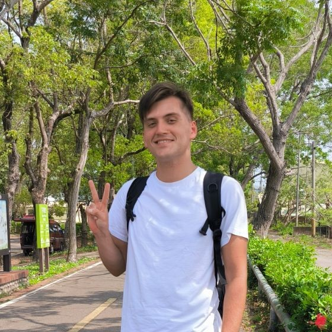

Ondřej Pavlík

Student of Palacky University, Chinese studies. Welcome to my homepage, my workplace.
Focusing on literary translation, classical Chinese and all Taiwan. Avid cook, guitar player and amateur photographer.